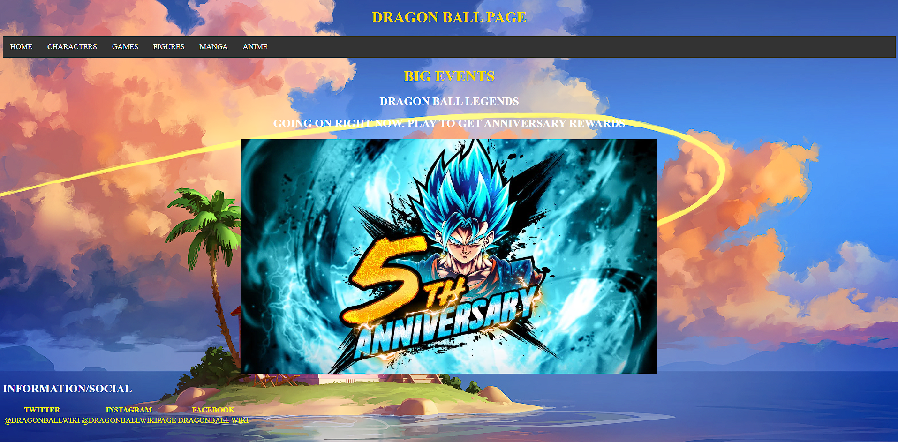

Projects i have done over the years of being in Information technology high school
1. This is one of my projects that i have done. It was school project On what to watch. The purpose on this project was to make a website that would recommend what to watch based on the genre you picked. Making these project was a great experience because it was a demo to what i would make later on in the year still was fun a big problem i had with this was making sure you get the right genre and the movie you got suggested was right.

2. This is my second project i had worked on, its a adventure game, unlike the last one this game took a bit more time because i had more then just one page of code also learning from the previuos project on how to make a button made this project somewhat easier.

3. This is my third project its a quiz game, this was what i made after learning how button work and experience from the "What Should I Watch" project this is what all that lead up to me combine what i have learned from the last two projects i have made.

4. This is my fourth project, this was my final project of my senior year looking back i can tell myself that i have grown by far this is my best project that i have made this year, learning how to make paddle hit a ball seem harder then i expected but i'm greatful from what i have learned in my class to make me accomplish this project.

5. This is my Fifth project, this was my final project of my junior year going into this i was nervous because it was my first big project that would have to be something really cool so me and my partner came up with the idea to make dbl blog page, this project was pure html so everything you see was done with html and i like the way our website came out.
